Experiment 3.2
Writing a Labview Program
If all we could with Labview was to make computer based copies of our conventional instruments, it would be of limited use. What makes Labview so valuable is that it is programmable. By changing the program a single box (the Lab PC) can perform the functions of a large collection of instruments, both conventional and unconventional.
Perhaps the greatest advantage of Labview however, is that it is user programmable: if no instrument is available which meets your requirements, you can modify an existing one or create an entirely new one.
Our goal for this Experiment will be to measure the resistance of the thermistor and display the result directly as a temperature reading. Since the DAQ card can only measure voltage, our first step is to convert the resistance to a measurable voltage. As an example of how this could be done, consider the circuit below:
By measuring the voltage drop (\(V_{res}\)) across the \(10\Omega\) resistor we can compute the current \(I\). Since the same current flows in both the resistor and the bulb, we can compute the resistance of the bulb as \(R_{bulb}=V_{bulb}/I\). If \(V_{bat}\) is known, we can determine \(V_{res}\) indirectly using KVL: \(V_{res} = V_{bat} - V_{bulb}\).
For our application, we need to replace the light bulb with the thermistor. Since the thermistor has a much higher resistance, we should also replace the \(10\Omega\) resistor with one closer to the nominal resistance of the thermistor, in this case \(10k\Omega\). In addition, since our goal is to measure temperature we will need to convert the measured resistance into a displayed temperature reading.
Part A: A Very Simple VI
To get started with Laview programming, we will start with the measurement of a single voltage.
-
Use a BNC-Banana adapter and a BNC patch cable to connect the 0-6 V power supply to J1.
-
Wire the following circuit
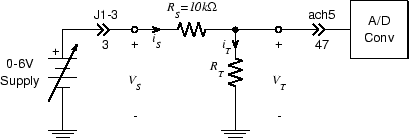 Note
\(R_T\) is the thermistor. Because the thermistor leads are very thin, you will probably need to use your needle nose pliers to hold them very near the ends in order to insert them into the breadboard without bending.
-
Using your DMM, set the \(0-6 V\) supply output (\(V_S\)) to \(5.00 V\). Measure \(V_T\) with your DMM. Since the nominal value of \(R_T\) is \(10 k\Omega\), it should be approximately \(2.5 V\). If not, adjust \(R_S\) so that the voltage is around \(2.5 V\).
-
Since we are going to build a VI from scratch, we will start with a new, blank VI. Select "New VI" from the "File" menu. A pair of windows should appear. The one on top will be a blank Front Panel window and the one on the bottom is a blank Block Diagram window.
-
We will first measure \(V_T\) and display its value.
-
Right click on the Front Panel window. You will get the Controls popup:
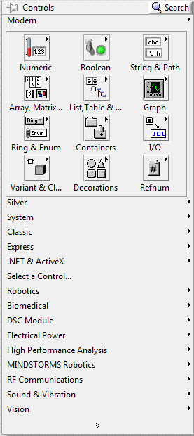 Tip
Place the cursor over the Numeric button and select Numeric Indicator. Place this box and left click. The fact that the word "Numeric" is highlighted means that it is selected and can be edited. Change the name to "VT" by double-clicking.
-
Now we need something for the indicator to display. Click on the Block Diagram window to bring it to the top. Note that placing the indicator on the front panel has also placed a block on the block diagram.
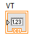 Note
This block is the icon associated with the indicator. We can provide values for it to display by connecting it to a signal source. The source we will use will be one of the A/D converter inputs.
-
Right-click on the Block Diagram window to bring up the Functions palette.
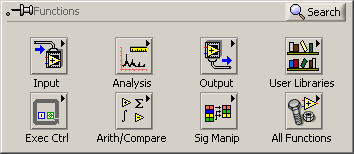 -
From the Functions popup, select Express \(\rightarrow\) Input \(\rightarrow\) DAQ Assist.
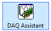 -
Position this somewhere to the left of the Graph indicator block and left click.
-
After a second or two the "Create New .." wizard will appear.
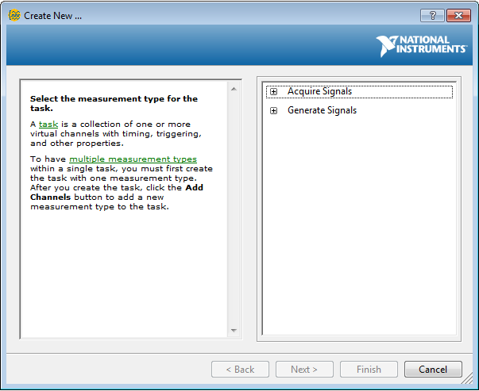 -
Click on "Acquire Signals" in the righthand column, then click on "Analog Input" then on "Voltage" in the list that appears.
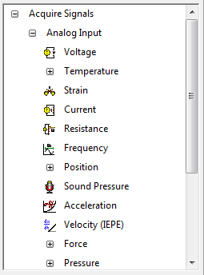 -
From the list of Supported Physical Channels that appears, select "ai5", then click the "Finish" button at the bottom of the frame.
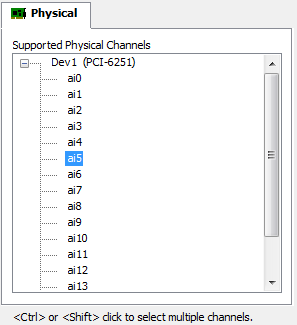 -
After another brief wait, the "DAQ Assistant" dialog appears. In the "Input Range" block set "Max" to 10 Volts and "Min" to -10 Volts. Set the "Acquisition Mode" to "1 Sample (On Demand)". The panel should look like this when you are done. Click the "OK" button when you're done.
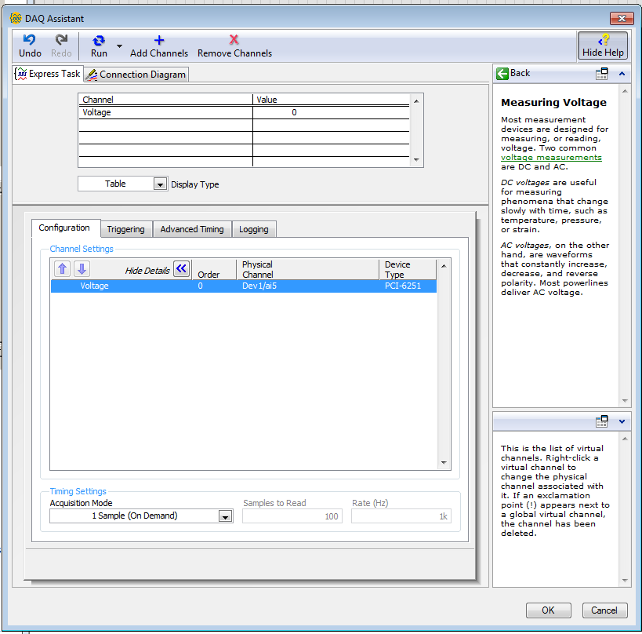 -
Things will click and whir for several seconds. When it's all over, the "DAQ Assistant" box will have expanded, and should have a white band with the word "data" in it.
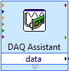 -
We're almost done. All that remains is to connect the source (A/D converter block) to the destination (numeric indicator block).
-
Place the cursor over the small black triangle in the "data" field of the DAQ Assistant block. It should change into an icon representing a small spool of wire. Left click once and move the cursor to the small white triangle in the center of the left edge of the numeric indicator icon and left click once more. That completes our first Labview program. It should look something like this:
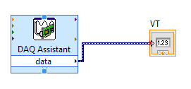 
Data Types
Notice that the color of the icon for the waveform graph changed from orange to blue. This is an indication that the type of data which it is displaying has changed. Like many programming languages (e.g. C) Labview maintains the notion of data types. Labview's data types include familiar ones such as integer, floating point, boolean, and string, as well as a number of unfamiliar ones (which we will try to avoid for the time being). Labview denotes data type by the color of the wire which carries it: integer wires are blue, floating point wires are orange, boolean wires are green, and strings are pink. Labview also supports collection types, such as arrays and structures. Scalars are denoted by thin solid lines, arrays by thick solid lines, and other collections by various patterned lines. The wide dark blue lines with internal dashes are a composite data type called dynamic data.
Dynamic data contains a lot of information in addition to the value of the sample, for example, the time at which the sample was taken, whether any errors were made in previous handling of the sample, etc. This means that when we connect our signal to the waveform display, it can automatically display the correct time scale on the x-axis, rather than just the sample number.
-
Click on the Front Panel window to bring it to the top. Run the VI by clicking on the Run arrow or by typing Ctrl-R. The
VTnemeric indicator should display the voltage across \(R_T\), which should still be about \(2.5 V\) -
Select
Save As...from theFilemenu. Set theSave in:field to an appropriate directory (i.e., your user directory).Note
Always set the destination directory when saving a VI. Never try to save a VI in the default directory.
Part B: Converting Voltage to Resistance
So far we're no better off than we would have been using the DMM. In fact we're worse off since all we have is a voltage. The DMM at least can read resistance directly. But given \(V_S\), \(V_T\), and Ohm's Law we can calculate resistance, and computers are very good at calculating things.
There are two ways we could formulate this calculation. We could do it in two steps, first computing \(I_T=I_S=(V_S-V_T)/R_S\), then using Ohm's Law to get \(R_T=V_T/I_T\). Alternately, we could treat the circuit as a voltage divider, which gives
\[ R_T=\frac{V_T}{V_S-V_T}R_S \]Because we will be interested in \(I_T\) in a subsequent Experiment, we will use the first approach.
-
On the front panel, create a new numeric indicator and label it
IT. -
In order to compute the current we will have to do some arithmetic on the \(V_T\) signal. Go to the block diagram window and right-click to get the
Functionspalette. Select Programming \(\rightarrow\) Numeric: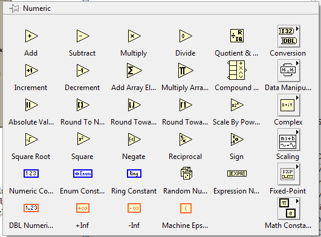 -
This has everything we need: subtraction, division, and constants (for \(V_S\) and \(R_S\) ).
-
Let's start with the subtraction. Move the cursor over the symbol labeled
Subtractand left click. Position the icon below the existing components on the diagram and left click to put it down. Note that while the cursor is over the symbol there are three small circles near the vertices of the triangle.Note
These indicate the connection points and will disappear when the cursor moves away.
-
Repeat the above process, but select the
Dividesymbol. Place it slightly to the right and a little lower than the subtract icon. -
Now let's do the constants, starting with \(V_S\). Select Numeric Constant from the Numeric palette and place the resulting block above and to the left of the subtract icon. The highlighted text indicates that you can enter a new value. Type
5and pressEnteror click the check box at the upper left of the window. Repeat this process, placing the icon for \(R_S\) below and to the right of the divide icon. Enter a value of 10000. Here's what you should have at this point: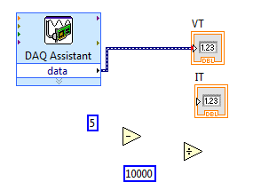 -
All that remains is to make the connections. Wire the blocks together appropriately. A couple of things to note:
Note
- The position of the terminals on the arithmetic blocks corresponds to the conventions of grade school arithmetic. For subtract the minuend is on top and the subtrahend is on the bottom.For divide the dividend is on top and the divisor on the bottom.
- To connect to an existing wire (in this case the one between the A/D
converter block and the
VTdisplay block), move the cursor near, but not directly on, the wire. If you place the cursor on the wire it will turn into an arrow, indicating that you can select the wire.
-
When you're done it should look something like this:
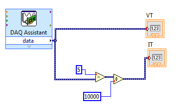 -
Let's test what we have so far. Go to the front panel and click on the
Runbutton. If all is well, \(V_T\) should still be about 2.5 V and \(I_T\) should be about 0.00025 A. -
Now that we have found the current in the thermistor, finding the resistance is easy: just divide \(V_T\) (which we measured directly) by \(I_T\) (which we just computed). To do this we need to add another numeric indicator to the front panel and a divide block to the block diagram. Let's put the indicator to the right of the two existing ones (and label it
RT.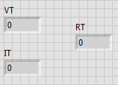 -
On the block diagram, place another divide block to the left of the
RTindicator block. Wire it up so that \(R_T=V_T/I_T\) and here's what we have: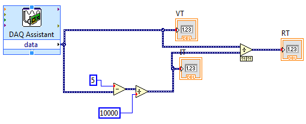 -
Test the VI by clicking
Runfrom the front panel. TheRTindicator should display a value close to 10000.
Part C: Converting R to T
Given this value of the resistance and the information on the thermistor data sheet, we can calculate the temperature.
-
Based on the information in the thermistor data sheet, derive a formula which gives the temperature (your choice of \(K, ^\circ C,\) or \(^\circ F\)) in terms of the resistance of the thermistor.
-
We could perform this computation the same way we did for resistance, by using a numeric operation block for each addition, division, etc. in the formula, but for a formula like this there is a more efficient and compact approach, the formula node.
-
In the Block Diagram window, right click to bring up the
Functionspalette. Move the cursor to Programming \(\rightarrow\) Structures. Click on theFormula Nodebutton. -
The formula node is a variable sized block, so it is instantiated by clicking on the desired location of the upper right corner and dragging to create the desired size. Move the cursor to a convenient spot on the block diagram, preferably near the
RTindicator icon, then click, drag, and release to create the formula node. It should look like this: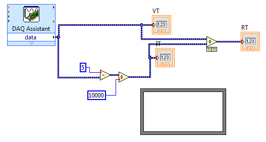 Tip
If you want to find out more about the components in the block diagram, you can turn on the Context Help feature: select
Show Context Helpfrom theHelpmenu. When context help is turned on, a window (labeledContext Help) appears in the upper right corner of the screen. When the cursor is moved over any component in the block diagram, a brief description and a link to additional information appears. -
Let's start with the formula. As an example, we'll use \(T=300\frac{10000}{RT}\). (If you got this formula, you should check your derivation, as it is not correct.) Since we can't type subscripts in labview, we will use \(RT\) in place of \(R_T\). To enter this into the formula node, simply place the cursor inside the block, right click, and start typing. The formula node uses the C language syntax, and each statement must end with a semicolon; When you have finished, click on the check box (or anywhere outside the formula node box).
-
At this point you may have noticed a change in the appearance of the toolbar: the run button has changed from a white arrow to a gray broken arrow ( 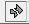 ). This means that there is an error in the block diagram and the VI won't run. To find out what the error is, click on the broken arrow button.
If you do this you should find that the problem is an undefined variable. Actually, there are two: \(T\) and \(RT\) . We will define these in the next step when we create the input and output terminals.
-
Place the cursor somewhere on the left-hand border of the formula node and right-click. Select
Add Inputfrom the popup menu. This should create a small rectangular box in the border. The highlighted (black) interior of the box is a selected text field. TypeRTand click the check box. Repeat this process on the right-hand border, but selectAdd Outputand typeTinto the box. -
The arrow is still broken, but now the error message complains of an "unwired input." Let's try to fix that: connect the input (RT) to the wire between the division block and the numeric indicator which displays the value of \(R_T\).
Unfortunately, this seems to have made things worse. Not only is the arrow still broken, but we also have a broken wire. (Broken wires are indicated by dashed lines with a red X in the middle.) The error list tells us: "You have connected two terminals of different types."
Dynamic data contains a lot of information in addition to the value of the sample, for example, the time at which the sample was taken, whether any errors were made in previous handling of the sample, etc. Dynamic data usually makes life easer for us by bundling ancillary information along with a signal so we don't have to be concerend about carrying it around separately, but at the moment it's causing problems. While most blocks (e.g. subtract, divide, numeric indicator) can accept any appropriate data type, including dynamic, others are more picky about what they will take. For example, the formula node expects ordinary, pure numeric data and doesn't know what to do with the additional stuff contained in dynamic data. We can fix this by converting the dynamic data to scalar data.
-
Remove the offending broken wire. To do this, place the cursor directly over the wire, so that it turns into an arrow, and double click. Press the
Deletekey. -
Right click to bring up the
Functionspalette. Select Express \(\rightarrow\) Sig Manip button to bring up the Signal Manipulation palette.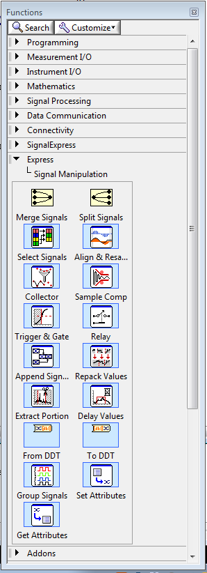 -
From this select the
From DDTblock. Place this just to the left of theRTterminal of the formula node. -
When you place the
From DDTblock, a dialog box labeled "Configure Convert from Dynamic Data" will appear. In theResulting data typefield, selectSingle Scalar, then clickOK. -
Wire the output of the
From DDTblock to theRTterminal of the formula node. Connect the input of theFrom DDTblock to the wire between the division block and theRTnumeric indicator. The arrow should now be unbroken. -
Now display the value of temperature by placing another numeric indicator on the front panel and labeling it
T. Return to the block diagram, and wire the new indicator icon to theTterminal of the formula node. Here's what you should have: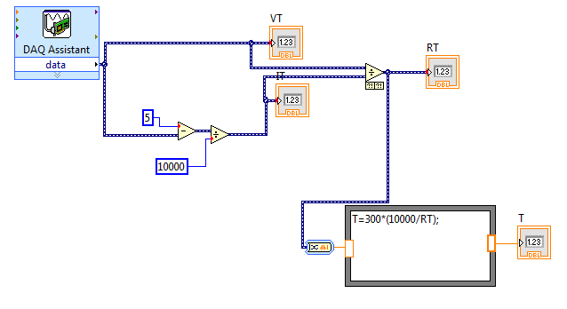 -
Return to the front panel and press the run button. The
Tindicator will display the current temperature.
Part D: Continuous Display
Although we have technically achieved our goal of measuring and displaying temperature, we can only do so on demand. It would be much more useful if we had a system which could continuously display the current temperature. Fortunately, this is a simple enhancement to make. Like more conventional programming languages, Labview has looping and branching constructs. What we need here is the while loop which repeats its contents until an exit condition is met.
-
Right click in the block diagram to bring up the
Functionspalette. Select Structures. Click on theWhile Loopbutton.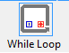 -
This is a variable sized block, like the formula node, and we want it to enclose everything we currently have in our VI. Click on the panel, and enclose your entire block diagram with the while loop.
Note
Note the green-bordered block labeled
stopin the lower right corner of the while loop. This is a free accessory that allows us to stop the loop, which would otherwise run forever. This block is an example of a control. A control is the dual of an indicator, i.e. it provides input from the front panel to the block diagram. Go to the front panel and notice that there is a new object, a button labeledSTOP. Pressing this button causes the associated icon to output a True value (when the button is not pressed, the output is False). -
From the front panel, press the
Runbutton. The indicators should now display continuously updated values. To convince yourself that these aren't random, grab the body of the thermistor between your thumb and forefinger, being careful not to touch the leads. The displayed temperature should increase. Press theSTOPbutton when done. -
The updating of the display, while certainly continuous, might be too fast to read. This is because new samples are being taken and displayed as fast as the A/D converter is able to take them (1,250,000 samples/second), which is much faster than any phenomenon we might bring into the lab is capable of changing its temperature. The net result is wasted processor power and a blurry display which is difficult to read.
There are a number of ways in which we can set the sampling rate to a more reasonable value. We will utilize one which requires minimal change to what we have already constructed.
-
Return to the block diagram and go to Functions \(\rightarrow\) Programming \(\rightarrow\) Timing. Select the
Time Delayblock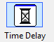 and place it in a convenient location inside the while loop. Accept the default delay of 1 second by clicking
OKin theConfigure Time Delaydialog box. (If the block automatically wires itself to something, remove the resulting wire.) -
Return to the front panel and click
Run. The display should now update at a more leisurely rate. -
Be sure to include a screenshot of your block diagram in your lab writeup.
-
Save your work as we will make further enhancements to this program next week.